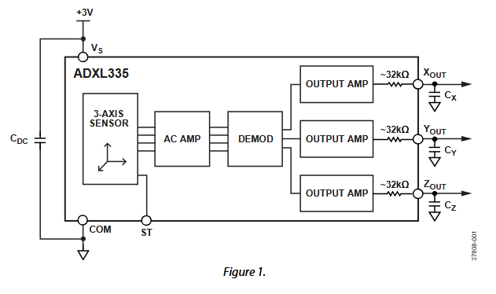
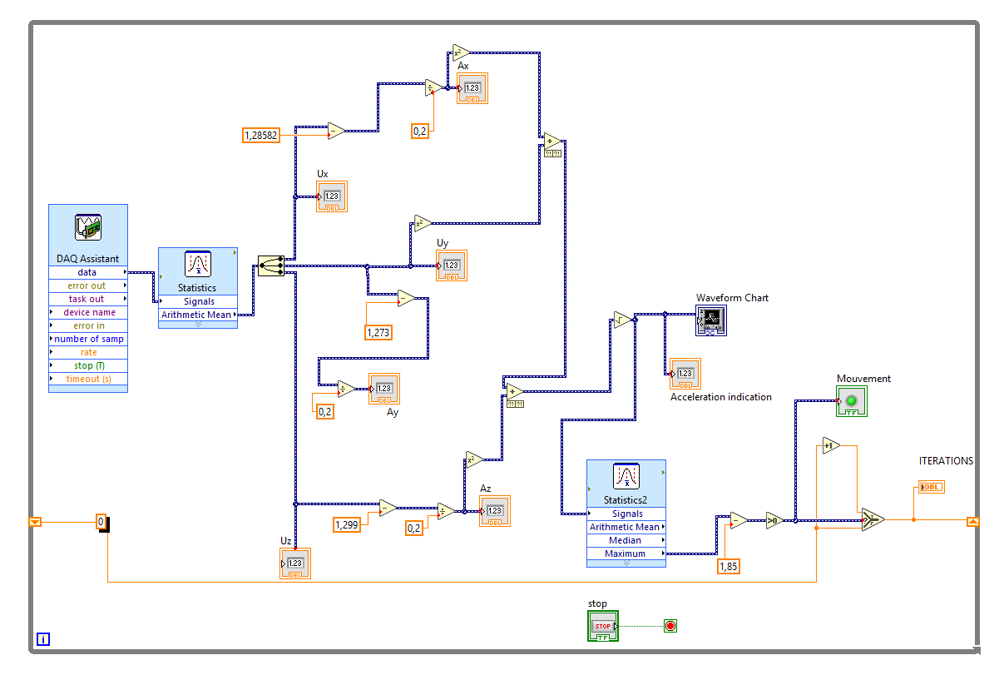

Compteur de mouvements avec un accéléromètreMotion counter with an accelerometer
Une application LabVIEW qui mesure l'accélération sur trois axes, l'affiche en temps réel et compte les mouvements effectués.
A LabVIEW application that measures acceleration on three axes, displays it in real time and counts the movements made.
Le contexte et l'objectifContext and goal
L'objectif de cette SAE était de créer sous LabVIEW une application qui, à partir d'un accéléromètre, donne un retour visuel en temps réel :
The goal of this project was to build a LabVIEW application that uses an accelerometer to give real-time visual feedback:
- le nombre de mouvements effectués depuis le lancement de l'application ;
- un flash lumineux à chaque mouvement détecté ;
- un graphe déroulant montrant l'évolution de l'accélération en fonction du temps.
- the number of movements made since the application started;
- a light flash each time a movement is detected;
- a scrolling chart showing how the acceleration changes over time.
Le capteur ADXL335The ADXL335 sensor
L'ADXL335 est un accéléromètre analogique qui mesure l'accélération sur trois axes (x, y et z), dans une plage de ±3 g, avec une alimentation entre 1,8 V et 3,6 V. Le signal de chaque axe passe par un amplificateur, un démodulateur puis un filtre passe-bas de lissage : on obtient trois tensions de sortie, Xout, Yout et Zout.
The ADXL335 is an analogue accelerometer that measures acceleration on three axes (x, y and z), over a ±3 g range, with a supply between 1.8 V and 3.6 V. Each axis signal goes through an amplifier, a demodulator and then a low-pass smoothing filter, giving three output voltages: Xout, Yout and Zout.

RéalisationHow we built it
1. Étalonnage du capteur1. Sensor calibration
Nous avons d'abord mesuré la tension de sortie de chaque axe en plaçant le capteur dans différentes positions :
We first measured the output voltage of each axis while placing the sensor in different positions:
- axe à l'horizontale (au repos) : environ 1,27 à 1,30 V, c'est la tension de référence (offset) ;
- axe tourné vers le haut : environ 1,52 à 1,57 V ;
- axe tourné vers le bas : environ 1,02 à 1,07 V.
- axis horizontal (at rest): about 1.27 to 1.30 V, the reference (offset) voltage;
- axis pointing up: about 1.52 to 1.57 V;
- axis pointing down: about 1.02 to 1.07 V.
Nous en avons retenu les offsets de chaque axe : 1,275 V pour X, 1,274 V pour Y et 1,299 V pour Z.
From this we kept the offset of each axis: 1.275 V for X, 1.274 V for Y and 1.299 V for Z.
2. De la tension à l'accélération2. From voltage to acceleration
Pour chaque axe, on convertit la tension mesurée en accélération, avec une sensibilité de 0,20 V/g :
For each axis, the measured voltage is converted into acceleration, using a sensitivity of 0.20 V/g:
ax = (Vmesuréemeasured − Voffset) / 0,200.20
Puis on calcule l'accélération globale à partir des trois axes :
Then the overall acceleration is calculated from the three axes:
a = √(ax² + ay² + az²)
3. Programmation sous LabVIEW3. Programming in LabVIEW
Le programme (VI) récupère les tensions des trois axes avec le DAQ Assistant, les lisse par une moyenne, calcule ax, ay, az puis l'accélération globale, et l'affiche sur un graphe déroulant. Quand l'accélération dépasse le seuil de détection, un voyant s'allume et le compteur de mouvements augmente.
The program (VI) reads the three axis voltages with the DAQ Assistant, smooths them with an average, calculates ax, ay, az and then the overall acceleration, and shows it on a scrolling chart. When the acceleration goes above the detection threshold, an indicator lights up and the movement counter goes up.

Difficultés et solutionsChallenges and solutions
La principale difficulté était de savoir comment compter un mouvement à partir de l'accélération. Nous avons choisi de compter un mouvement chaque fois que l'accélération globale dépasse un seuil de 1,85 g. Le comptage fonctionne, mais reste approximatif selon la vitesse du mouvement.
The main challenge was working out how to count a movement from the acceleration. We chose to count a movement each time the overall acceleration goes above a threshold of 1.85 g. The counting works, but remains approximate depending on how fast the movement is.
RésultatsResults
L'application répond au cahier des charges : elle affiche en temps réel les tensions et accélérations des trois axes, l'accélération globale sur un graphe déroulant, un voyant qui s'allume à chaque mouvement détecté et le nombre de mouvements.
The application meets the requirements: it shows in real time the voltages and accelerations on all three axes, the overall acceleration on a scrolling chart, an indicator that lights up for each detected movement, and the number of movements.